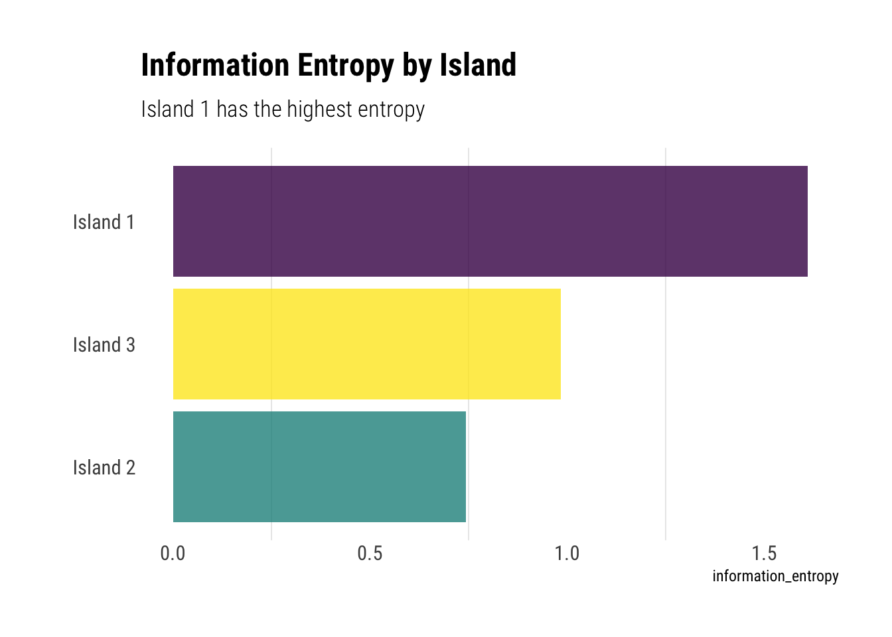
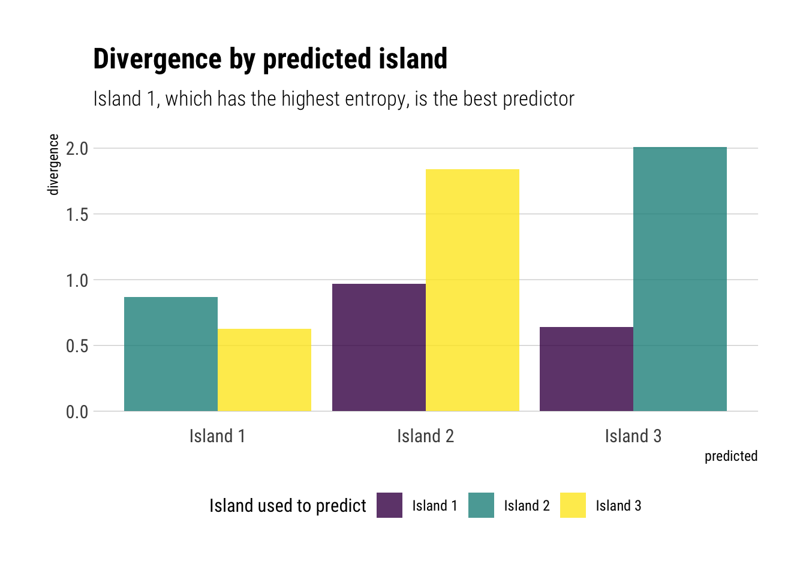
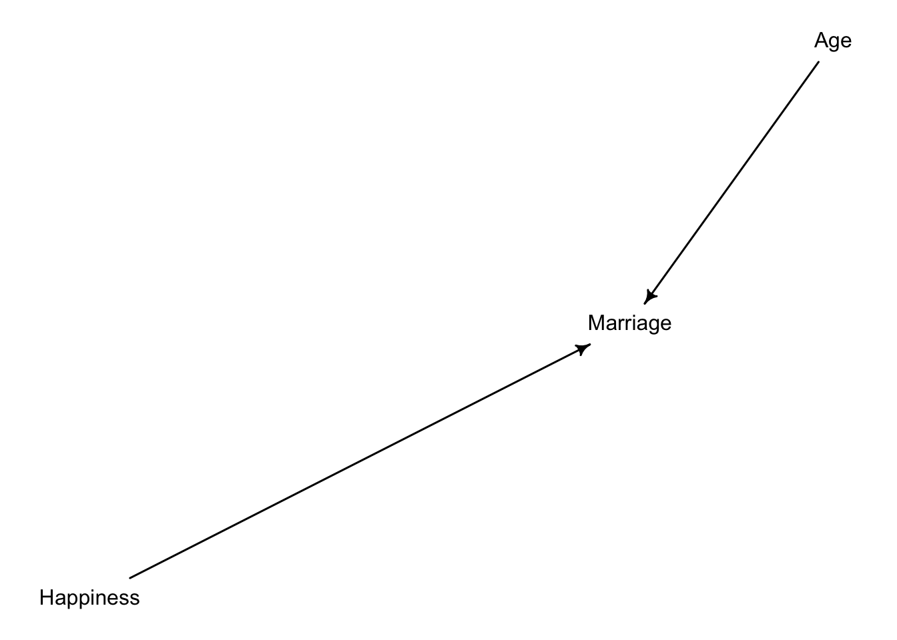
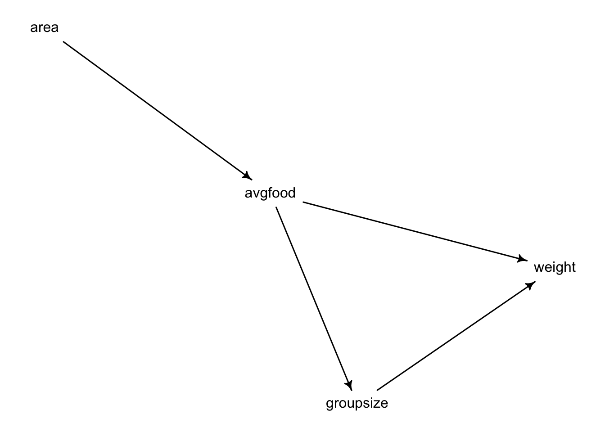

Statistical Rethinking: Week 4
This week was a marathon of content. Richard introduced beautifully the trade-off between overfitting and underfitting and prescribed two complimentary methods to help us navigate this trade-off:
- Regularizing priors
- Information criteria and Cross-Validation estimates of the risk of overfitting.
Regularizing priors reduces the risk of overfitting of any model by introducing skepticisim into the priors. Whereas information criteria and Cross-Validation help us to estimate whether we have overfitted or not.
Homework
Consider 3 fictional Polynesian Islands…
First, compute the entropy of each island’s bird distribution:

Island 1, having an uniform probability of each bird, encodes the highest amount of uncertainity of all the three islands. Both island 2 and 3, having 0.8 and 0.7, respectively, in only one type of bird, enconde much lower levels of uncertainty in their distributions.
Second, use each island’s bird distribution to predict the other two.

Two facts arise:
Predicting “Island 1” is relatively easy. It already encodes so much uncertainty that the extra uncertainty induced by using any other distribution is relatively low. Nevertheless, it is better to use “Island 3”, which encodes the highest uncertainty.
To predict either “Island 2” or “Island 3”, it is markedly better to use the distribution with the highest entropy: “Island 1”. It encodes so much uncertainty in itself, that, when we see the true distribution, it is hardly surprised: it expects almost anything.
Recall the marriage…
Recall the marriage age, and happiness collider bias example from Chapter 6. Run models m6.9 and m6.10 again. Compare these two models using WAIC (or LOO, they will produce identical results). Which model is expected to make better predictions? Which model provides the correct causal inference about the influence of age on happiness? Can you explain why the answers to these two questions disagree?
Let’s load the data:
Before fitting the model, let’s remember our assumed DAG.

Thus, Age and Happiness are independent. However, if we condition on Marriage, we open a collider which will make our statistical model to identify and information flow between age and happiness.
WAIC SE dWAIC dSE pWAIC weight
m6.9 2713.797 37.55914 0.0000 NA 3.647937 1.0000e+00
m6.10 3102.072 27.75233 388.2746 35.46971 2.423316 4.8667e-85Considering our DAG, the model that correctly identifies the causal relationship between happiness and age is m6.10. Whereas m6.9 opens a collider and thus its coefficient estimates are confounded.
Nevertheless, by examing the difference in WAIC (the smaller the better), we estimate that the model that will predict happiness better out of sample is m6.9: the confounded model. This only highlights the difference between the different goals of prediction and causal inference. Why? Because the information that flows once we open the collider, although causally incorrectly attributed to age, is valuable information that can be used to predict happiness.
Reconsider the urban fox analysis from last week’s homework. Use WAIC or LOO based model comparison on five different models, each using weight as the outcome, and containing these sets of predictor variables:
- avgfood + groupsize + area
- avgfood + groupsize
- groupsize + area
- avgfood
- area
Let’s draw the data and remember our DAG:

- avgfood + groupsize + area
Given our DAG, using area and avgfood simultaneously blocks the pipe that goes from area to weight. However, it correctly estimates the effect of groupsize on weight.
- avgfood + groupsize
Given this model, we will estimate the effect of groupsize on weight correctly.
- groupsize + area
Given our DAG, controlling by groupsize and including avgfood should be equivalent as including avgfood.
- avgfood
Given our DAG, this model estimates correctly the total effect of avgfood on weight.
- area
This model correctly estimates the total effect of area on weight.
Now, it’s time to compare the out-of-sample prediction accuracy of the different models:
WAIC SE dWAIC dSE pWAIC weight
model_1 322.8945 16.27362 0.00000 NA 4.655545 0.457482115
model_2 323.8989 16.08777 1.00444 3.570389 3.730356 0.276861647
model_3 324.0148 15.85169 1.12030 2.962192 3.790548 0.261278688
model_4 333.4444 13.78855 10.54991 7.181399 2.426279 0.002341478
model_5 333.7239 13.79447 10.82943 7.230715 2.650636 0.002036072Given our DAG, if we include groupsize, the information flowing from either area or avgfood should be the same in the 3 models. Thus, it makes sense that we get equivalent predictions with either way.
Finally, given that the total effect of avgfood and area are the same, the information flows from either of those in the models 4 and 5 should also be the same. Thus, we get equivalent predictions for both models.